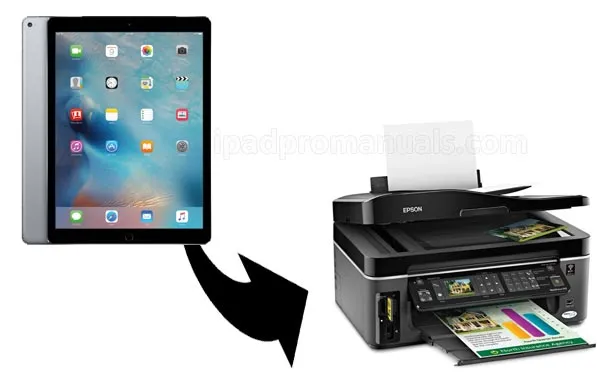

How to Print from iPad Pro Using Easy Steps and Methode
With people do most of the tasks on iPad rather than on PC, it is a little bit inconvenient if you have to connect the iPad to the PC just whenever we really need to print something like email, documents, and etc. Not only time consuming, it is also inefficient to get the installation done every time you have to print.
Considering the need of people with such fast-paced lifestyle, Apple has been developing technology which allows its users to print directly from their iPad Pro, even when we are away from the printer. If you are curious on how to print from iPad Pro, here you should try these steps below!

Simple Guide on How to Print From iPad Pro
If you want to print something from your iPad Pro, follow this tips below.
- Using AirPrint
You can print from your iPad Pro with the Wi-Fi enabled printers which are compatible with AirPrint in your iPad. The Steps are so simple. First, you should ensure that both your iPad Pro and the printer have been connected to the same Wi-Fi. After that, you can click the “Action” button in the iPad app which you want to print. Choose the “Print” option and in the “Printer Options” box, you can select the printer’s name as well as how many copies you want to print. Click the “Print” button and finish! Simple right?
- Using Printer Pro
Printer Pro is the application by Readdle which was once admitted by Apple as application of the week. It enables you to print from iPad Pro as long as the printer and iPad both connected to the same Wi-Fi network. After that, you can simply choose the documents to print, from a web page, pdf, or even image and touch “Print”. How to print from iPad Pro if the printer turns out unavailable? You can access it by inputting the direct IP Address.
Printer Pro is not available at the App Store right now. For this reason
You can download one of the latest versions, we saved it for you on Google Drive